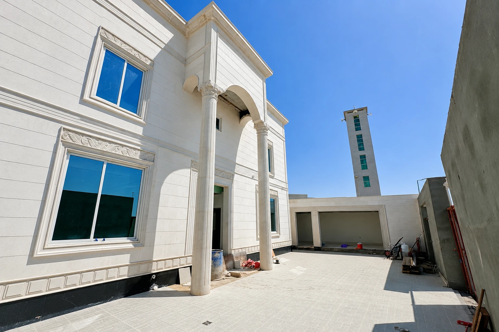

البحث عن أفضل شركة تسليم مفتاح بالرياض يعني غالبًا أنك تريد تقليل تشتيت الإدارة بين مقاول العظم وفنيي الكهرباء والسباكة والتكييف والتشطيب والديكور. هذا هدف منطقي، لكن الجهة الواحدة تنجح فقط إذا امتلكت نظامًا يربط كل هذه التخصصات ويحول توقعاتك إلى نطاق واضح.
قد يحمل عرضان العنوان نفسه «تسليم مفتاح»، بينما يشمل الأول التصميم والأنظمة والخامات والأعمال الخارجية، ويستبعد الثاني المطابخ والتكييف والإنارة وبعض الرسوم. لذلك لا يمكن الحكم من اسم الخدمة. الأسئلة العشرة التالية تكشف ما الذي ستديره الشركة فعلًا وما الذي سيبقى عليك.
استخدم هذا الاختبار بعد قراءة دليل أفضل شركة تسليم مفتاح في الرياض، ثم طابق الإجابات مع بنود عقود التسليم على المفتاح قبل التوقيع.
1. السؤال الأول: ماذا يعني جاهزًا للاستخدام في هذا العرض؟
اطلب قائمة نتيجة نهائية: هل المشروع صالح للسكن أو التشغيل؟ هل تشمل الإنارة والأدوات الصحية والأبواب والتكييف والأعمال الخارجية والتنظيف والتشغيل؟ وهل الأثاث الثابت أو المطابخ أو الأنظمة الذكية داخل النطاق أم خارجه؟
كلما كانت النتيجة النهائية قابلة للوصف والقياس، قل الخلاف عند التسليم. لا تقبل أن يُترك تعريف الجاهزية للاجتهاد بعد انتهاء الميزانية.
2. السؤال الثاني: من يدير التصميم والموافقات والتغييرات؟
اسأل هل التصميم مكتمل قبل التعاقد أم سيُستكمل أثناء التنفيذ، ومن يعتمد المخططات والتفاصيل والألوان. كذلك يجب تحديد مسؤولية الرخص والموافقات المطلوبة بحسب طبيعة المشروع والجهات المختصة، وعدم افتراض دخولها ضمن الخدمة دون نص.
وجود نقطة اتصال واحدة لا يعني أن العميل خارج القرار. الشركة المحترفة تبني جدول اعتمادات يبين ما يحتاج موافقتك ومتى، حتى لا يتوقف الموقع بانتظار اختيار متأخر.
3. السؤال الثالث: هل توجد مصفوفة نطاق واستثناءات؟
مصفوفة النطاق تضع أمام كل حزمة الطرف المسؤول عن التصميم والتوريد والتركيب والفحص والاعتماد. تشمل الأعمال المدنية والإنشائية والكهربائية والميكانيكية والصحية والتشطيب والديكور والأعمال الخارجية بحسب المشروع.
اطلب قائمة مستقلة للاستثناءات والبدلات والبنود الاختيارية. العرض الذي يخفي الاستثناءات داخل ملاحظات صغيرة يصعب إدارته حتى لو بدا مختصرًا ومريحًا.
تصميم
من يصدر المخطط ومن يراجعه ومن يعتمد النسخة النهائية؟
توريد
من يشتري المادة ومتى تنتقل مسؤوليتها إلى الموقع؟
تركيب
من ينسق الفرق ويعالج التعارض بين التخصصات؟
اختبار
من يطلب الفحص ويوثق النتيجة ويغلق الملاحظة؟
4. السؤال الرابع: كيف تُعتمد الخامات والبدائل؟
اسأل هل المواصفات تحدد الماركة والموديل واللون والحجم والأداء، أم تستخدم أوصافًا عامة مثل «درجة أولى». البنود غير المعتمدة يمكن وضع بدل مالي لها، لكن يجب بيان ما يشمله البدل وكيف تُسوى الزيادة أو الوفر.
اطلب سجل عينات يربط كل مادة بمكان استخدامها وتاريخ اعتمادها ومدة توريدها. البديل لا يعتمد لمجرد تشابه الشكل؛ يجب مراجعته وظيفيًا وفنيًا وماليًا.
5. السؤال الخامس: كيف تمنعون تعارض العظم وMEP والتشطيب؟
شركة تسليم المفتاح القوية تشرح آلية تنسيق مخططات الكهرباء والسباكة والتكييف مع الإنشائي والأسقف والنجارة والواجهات. اسأل عن مخططات الورشة والفتحات ونقاط الفحص قبل الصب أو الإغلاق.
التعارض الذي يُكتشف في المخطط قرار؛ أما الذي يُكتشف بعد التشطيب فهو تكسير وتأخير وتكلفة. لذلك يعد سجل التعارضات والاعتمادات مؤشرًا مباشرًا على نضج الإدارة.
6. السؤال السادس: هل البرنامج مبني على المشتريات والقرارات؟
اطلب برنامجًا يربط التصميم والتوريد والتنفيذ والفحص، لا قائمة تواريخ عامة. الأبواب والمصاعد والزجاج والتكييف وبعض التشطيبات قد تحتاج اعتمادًا وتصنيعًا مبكرًا، وتأخرها قد يمنع إغلاق مراحل كاملة.
يجب أن يوضح البرنامج القرارات المطلوبة منك، والمواد طويلة التوريد، ومسار تحديث المدة عند تغيير معتمد. كذلك اسأل عن خطة التعافي إذا تأخر نشاط حرج.
7. السؤال السابع: كيف يُدار السعر والبدلات والاحتياطي؟
فرّق بين السعر الثابت لنطاق مكتمل، والبدلات لبنود لم تعتمد، والكميات التقديرية، والبنود الاختيارية. اطلب كشفًا يوضح ما يمكن أن يغير الإجمالي حتى لا تعتقد أن الرقم سقف نهائي بينما توجد قرارات كبيرة مؤجلة.
راجع شروط الدفعات والمقدم والمواد خارج الموقع والاحتجاز إن وجد. الدفعة الجيدة ترتبط بقيمة منفذة أو موردة يمكن التحقق منها، لا بنسبة زمنية فقط.
8. السؤال الثامن: ما دورة أمر التغيير؟
التغيير متوقع في المشاريع، لكن الفوضى ليست متوقعة. اطلب نموذجًا يوضح الوصف والسبب والتكلفة والمدة والاعتمادات، ويمنع البدء قبل الموافقة إلا في حالات السلامة العاجلة.
اسأل كذلك من يملك صلاحية طلب التغيير واعتماده. الرسائل المتفرقة من أكثر من شخص قد تصنع أعمالًا متعارضة ومطالبات لا يتذكر أحد أصلها.
9. السؤال التاسع: كيف تُفحص الأعمال المخفية ويُغلق العيب؟
يجب أن تسبق الإغلاق فحوصات العزل والضغط والتمديدات والمناسيب والتسليح والتثبيت بحسب البند. اطلب قوائم فحص وتقارير وصورًا، وآلية لتسجيل الملاحظات ومنع الانتقال قبل إغلاق الحرج منها.
في التشطيبات، يفيد اعتماد نموذج أو غرفة نموذجية. فهو يكشف التقاء الخامات والإضاءة والنجارة والتكييف قبل تعميم الخطأ على كامل المشروع.
10. السؤال العاشر: ما تعريف الاستلام والضمان بعد المفتاح؟
الاستلام ليس جولة أخيرة فقط. اسأل عن التشغيل والاختبارات والتنظيف وقائمة النواقص وتسليم المفاتيح والمخططات التنفيذية وكتيبات الأجهزة والضمانات وفترة معالجة الملاحظات. يمكن تقسيم الاستلام إلى أولي ثم نهائي بحسب العقد.
أفضل شركة تسليم مفتاح بالرياض تشرح أيضًا نقطة التواصل بعد التسليم، وما يغطيه الضمان وما يستثنيه، وكيف تُبلغ الملاحظة. هذه الإجابة تكشف ما إذا كانت العلاقة تنتهي عند الدفعة الأخيرة أم عند إغلاق الالتزامات.
هل تريد مناقشة مشروعك في الرياض؟
أرسل نوع المشروع وموقعه والمرحلة الحالية والمخططات أو الصور المتاحة لنحدد معك نطاق المعاينة والعمل بوضوح.
طلب استشارة أو عرض سعرالخلاصة
لا توجد إجابة سحرية تحدد أفضل شركة تسليم مفتاح بالرياض، لكن توجد إجابات تكشفها: نطاق جاهزية محدد، إدارة للتصميم والاعتمادات، مواصفات واضحة، تنسيق للتخصصات، برنامج مرتبط بالتوريد، سعر مفهوم، تغييرات موثقة، فحوصات قبل الإغلاق، واستلام ينتهي بوثائق وضمانات. اجمع هذه الإجابات في العقد قبل أن تبدأ رحلة المشروع.
تابع أدلة تسليم المفتاح
انتقل إلى الدليل المحوري أو الأدلة المرتبطة، ثم إلى الخدمة عندما تصبح جاهزًا للتنفيذ.